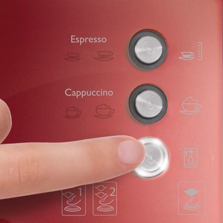

Scurta descriere
Espressor manual Breville Prima Latte VCF046X-01, 15 Bar, 1.5 l, Recipient detasabil lapte 0.3 l, Rosu inchis
Breville Prima LATTE iti ofera o cafea gustoasa si aromata, prin simpla atingere a unui buton, fie ca folosesti capsule, fie cafea macinata. Spre deosebire de alte espressoare, poti folosi orice fel de lapte, in functie de preferinte, rezervorul de 300 ml fiind detasabil, astfel incat poate fi depozitat usor in frigider.
Oricare ar fi alegerile tale, datorita pompei cu presiune de 15 bari, Prima LATTE te va desfata de fiecare data cu o cafea cu spuma bogata si densa. Functiile automate sau selectarea manuala iti ofera posibilitatea sa obtii o cafea asa cum iti doresti. Rezervorul de apa, ergonomic si mai mult decat generos, de 1.5 litri, impreuna cu zona de preincalzire a cestilor completeaza functiile pe care Prima LATTE ti le ofera.
Functii automate
Modurile automate pe care le pune la dispozitie modelul Prima LATTE sunt excelente pentru cei care isi doresc un espresso, un cappuccino sau un latte rapid. Datorita panoului de control intuitiv, aparatul iti ofera bautura preferata in doar cateva minute. Cei mai pretentiosi pot utiliza modul manual pentru un gust personalizat. De asemenea, pentru curatarea sistemului de preparare, este suficienta apasarea unui buton.
Functie spumare lapte
Gradul de spumare a laptelui poate fi reglat, in functie de gust, de la butonul rezervorului detasabil. Spumarea se poate face in mod automat pentru retetele directe sau prin apasarea pentru cel putin 3 secunde a butonului de Cappuccino, pentru cele manuale.
Recipient de lapte detasabil
Prima LATTE dispune de un recipient detasabil de 300 ml pentru folosirea laptelui proaspat. Acesta este detasabil, iar atunci cand nu este folosit, poate fi depozitat cu usurinta in frigider, pentru pastrarea prospetimii. Ai astfel oricand la dispozitie lapte proaspat pentru un cappuccino sau latte savuros. Cantitatea maxima este suficienta pentru prepararea a 8 portii de cappuccino.
Optiuni multiple

Filtrele pentru prepararea cafelei, in doza simpla, doza dubla si cel pentru monodoze de 45 mm sunt optiunile pe care le ai la dispozitie astfel incat sa obtii rezultatul perfect in functie de tipul de cafea pe care il folosesti.
Inaltime reglabila in functie de ceasca
Fie ca folosesti o ceasca, o cana sau paharul dedicat pentru Latte, pentru a evita stropirea si pentru colectarea reziduurilor, tavitele detasabile si ergonomice sunt ajutorul perfect pentru aceasta.
Deliciul unui cappuccino cremos
Placerea de a savura un cappuccino cremos si delicios, cu spuma bogata si catifelata de lapte proaspat, este pretextul ideal de a-ti invita prietenii dragi si a sta la povesti despre vacante de vis si planuri indraznete. Cu functia automata te poti bucura fie de un cappuccino mic (ceasca 180 ml), fie de unul mare (ceasca 300 ml).
Latte, momentul tau de rasfat
De fiecare data cand iti doresti un moment de rasfat, incanta-ti simturile cu un latte delicios cu spuma fina de lapte proaspat, preparat cu Breville Prima Latte. Cu functia automata, poti selecta fie un latte mic (ceasca 350 ml) sau unul mare (ceasca 450 ml), exact pe gustul tau.